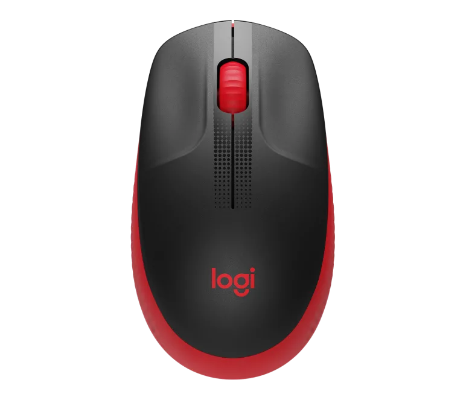
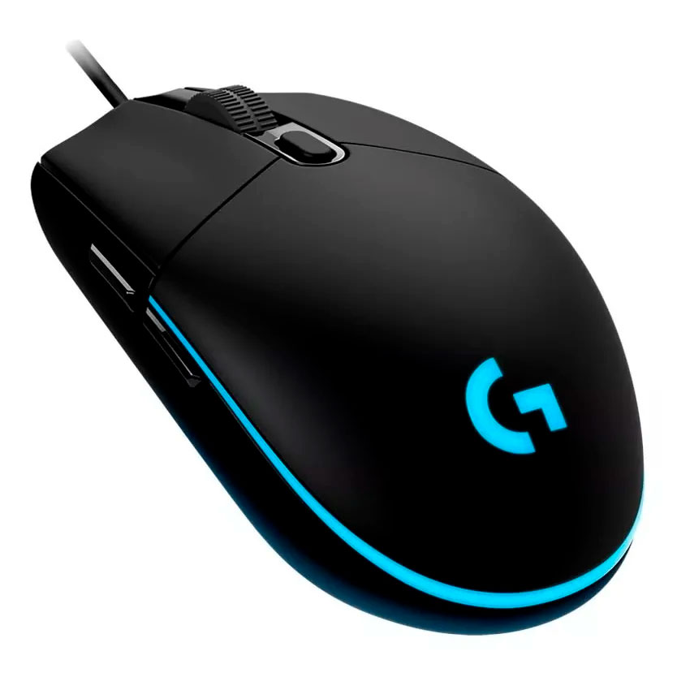
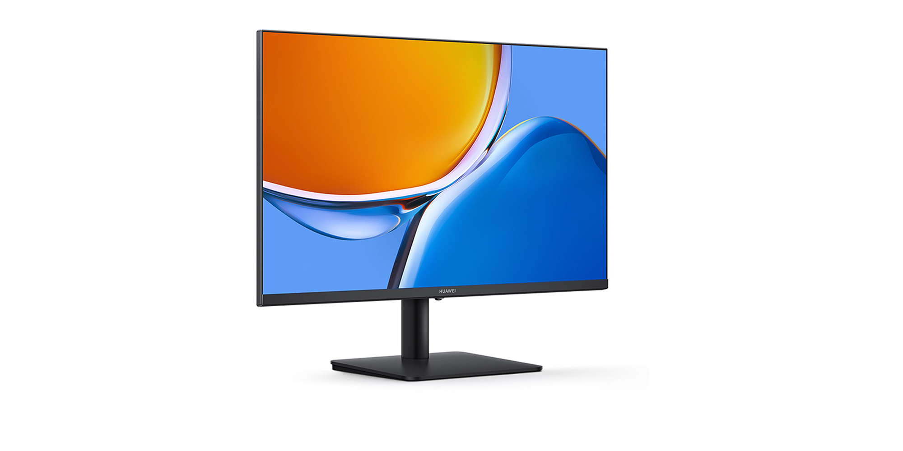

Mouse G203 para juegos
- Descubre el mouse G203 para juegos.
- Dotado de iluminación RGB LIGHTSYNC con efectos de onda de colores
- Mouse inalambrico, Bluetooth

Mouse silencioso recargable HP 710
- Mouse inalambrico, Bluetooth
- Tecnología de sensor: Alta precisión Darkfield

Mouse recargable HP 510
- Alta precisión Darkfield
- Rueda de desplazamiento: sí, con cambio automático
- Desplazamiento horizontal: sí, manteniendo presionado el botón lateral mientras se gira el botón rueda
- Plástico en grafito: 78% de material reciclado posconsumo 2Excluye plástico del conjunto de cableado impreso (PWA), receptor, cable, cableado FCC y empacado.

Huawei MateView GT
- Monitor Ultrawide de Rapida Actualizacion
- Monitor curvo de 34"
- Pantalla de 3k a 165Hz
- Barra de sonido Estereo

Huawei YZ
- Monitor Curvo High-Refresh
- Monitor Curvo de 27"
- Pantalla 2K 165Hz
- Color Cinematográfico

Huawei GX
- Monitor Ultra Ancho de Alta Actualización
- Monitor curvo de 34"
- Pantalla 4K 165 Hz
- Color cinematográfico